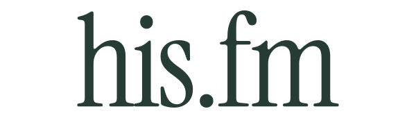
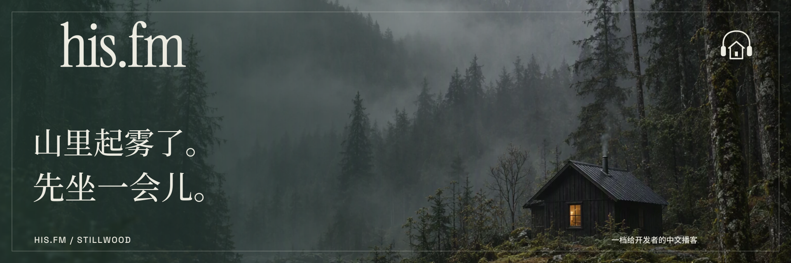
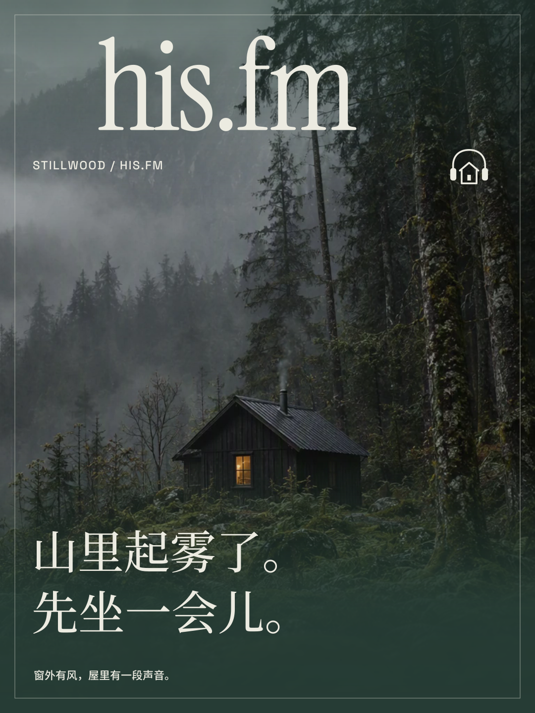
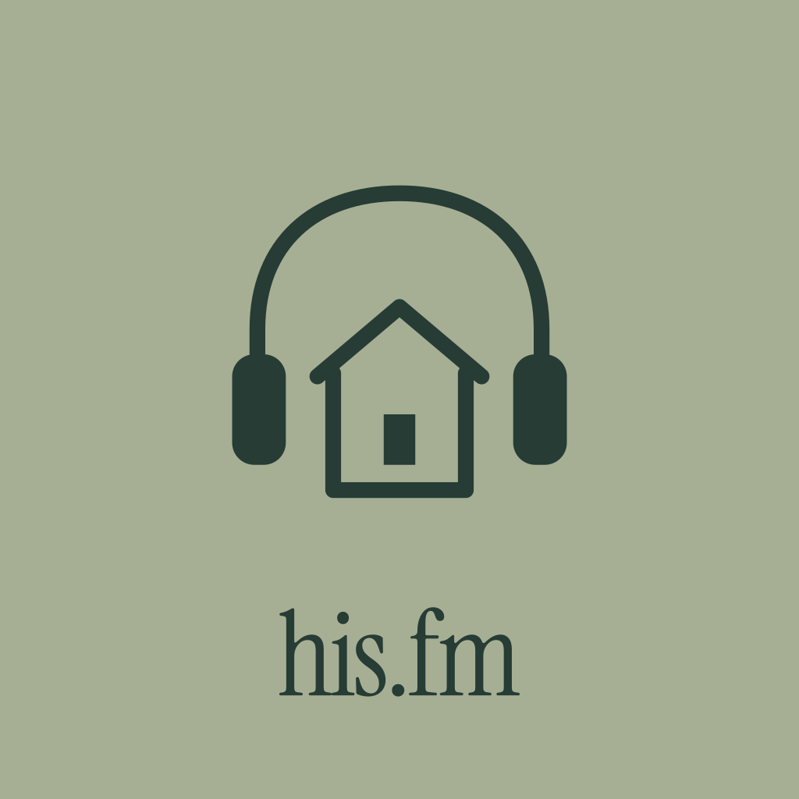

EP.001
下班后，还要追多少个 AI？
已有文稿 · 工作与睡眠

窗外有风，屋里有一段声音。

STILLWOOD
深杉绿、潮湿木纹与一扇暖窗。把耳机的弧线藏进小屋的轮廓，像一封从林间寄来的信；天气照常经过，屋里保留自己的时间。
01 / VISUAL LANGUAGE
衬线字标保留木版书页的温度。独立符号用一个耳机拱顶接住小屋的斜屋面；开口、留白与一小块灯光构成识别。

his.fm / STILLWOOD英文用轻盈的衬线，中文用中等字重宋体。拉开行距，保留木屋里翻一页书的速度。
02 / SERIAL COVER SYSTEM
每张封面由主体图与独立品牌 Cover 叠加。字标、标题、期号和边框都在可替换的矢量前景层中。
已有文稿 · 工作与睡眠


概念选题 · 走一段路


概念选题 · 屏幕之外
001 使用现有文稿标题；002—003 为设计样题，编号仅用于系列比较。所有页面均为静态设计预览，未录制的节目没有播放控件。
全幅环境图上保留一圈亚麻白细线，左上是小字标，右上是耳机小屋。底部松针色渐层托起宋体标题；暖窗色只出现一次，像一盏灯。
查看未经处理的主体原图 ↗03 / DIGITAL EXPERIENCE
首页、节目列表、单集文稿与关于页面。每套独立编排，桌面与手机都可以直接打开。
04 / IN THE WORLD
横幅、竖版海报、频道头像与小尺寸使用，共用同一套图形语法。

1920 × 640 / CHANNEL BANNER ↓
1080 × 1440 / POSTER ↓
05 / DELIVERY
字标与 Cover 为独立矢量。新主体图由 Workflow 的 GPT Image 2.5 Sunburst 生成；原图、提示词与来源记录单独归档。
提案尚未替换线上品牌。